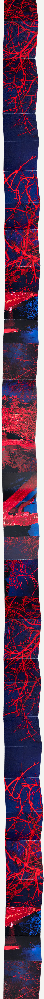
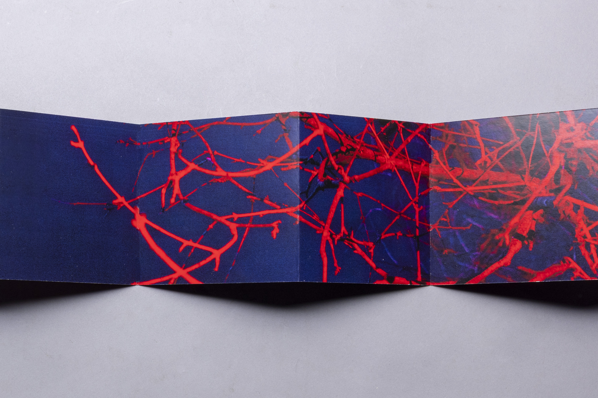
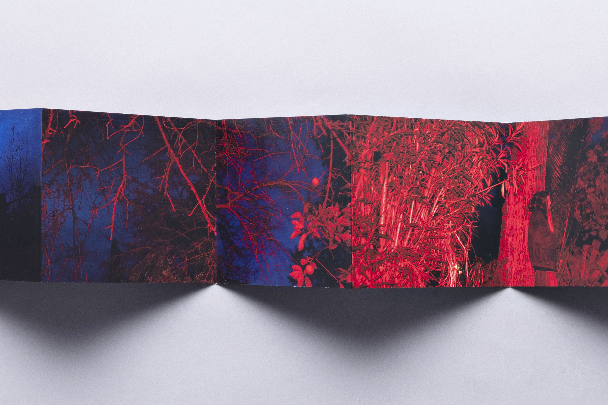
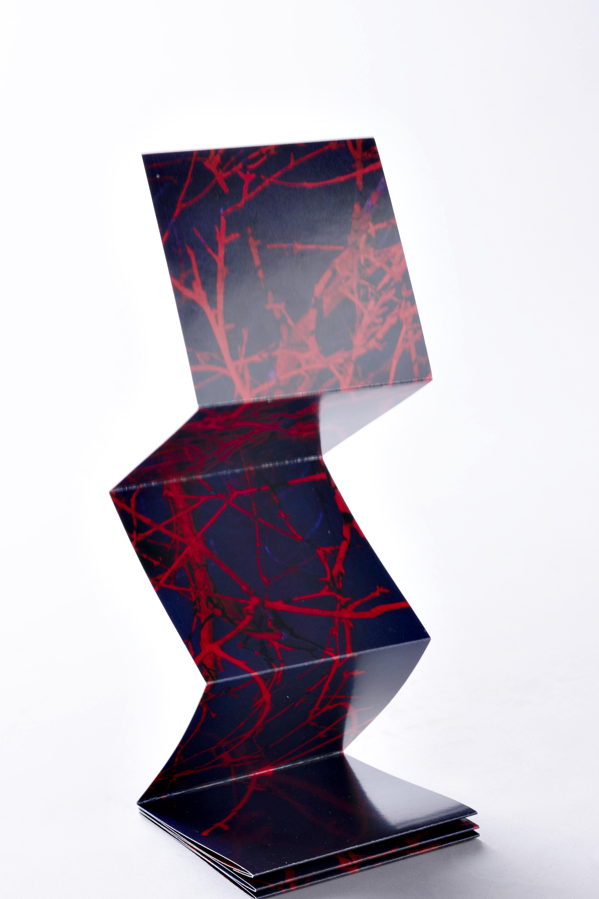
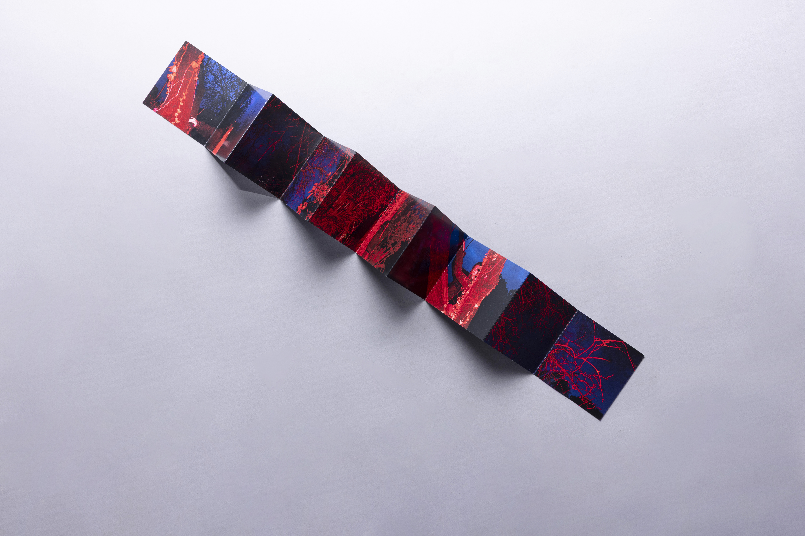
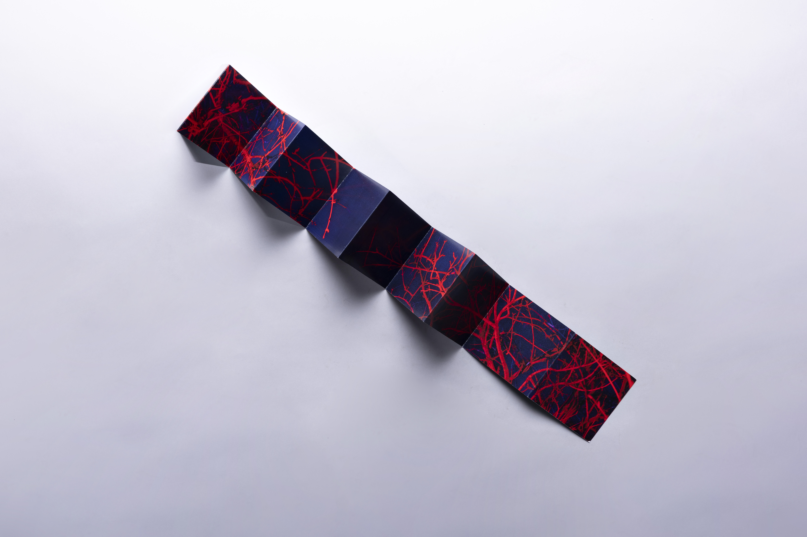
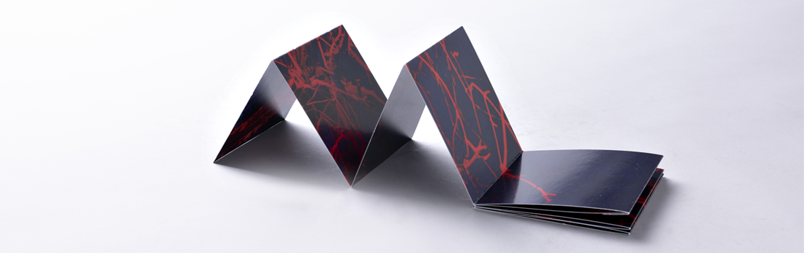
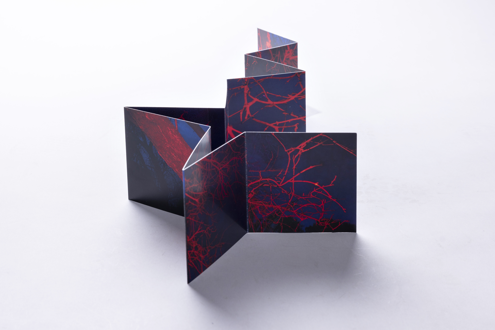

For this project, the focus was on isolating the intricate, skeletal structures of nature and recontextualize them through a bold, primary color palette. As the Lead Photographer, I focused on capturing the fine details and depth of the branches, ensuring the red highlights felt luminous against the matte blue shadows. The project culminated in a physical, accordion-fold print. My collaborator, handled the composition, strategically placing the images to create a continuous flow that changes as the viewer unfolds the piece. The final result is a fusion of Art Direction and precision Printing that explores the link between digital photography and physical art.







